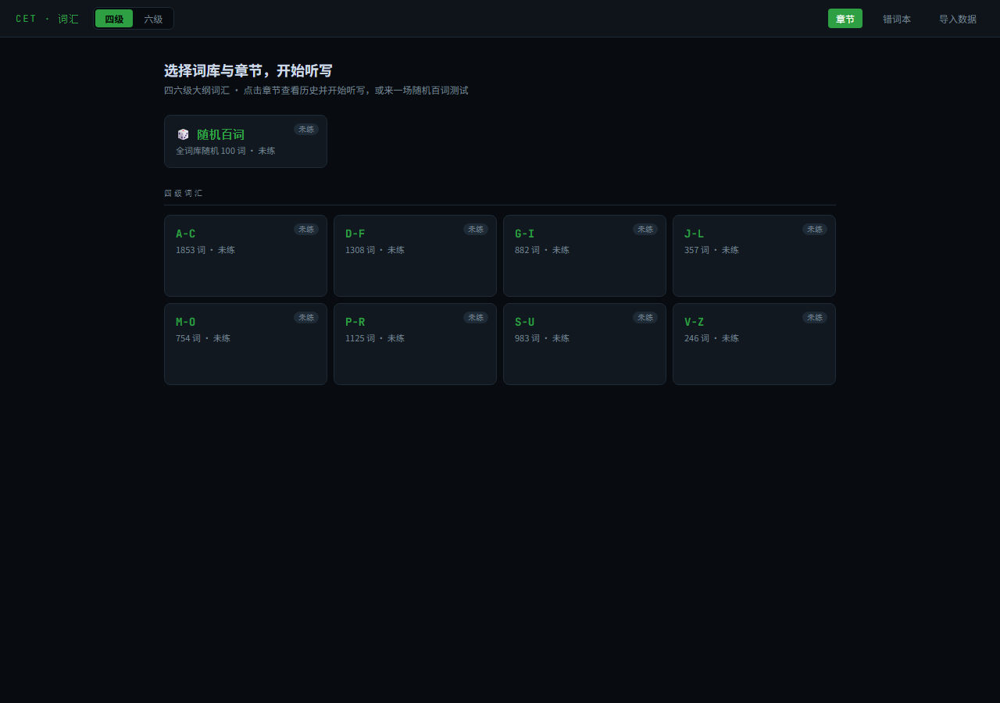
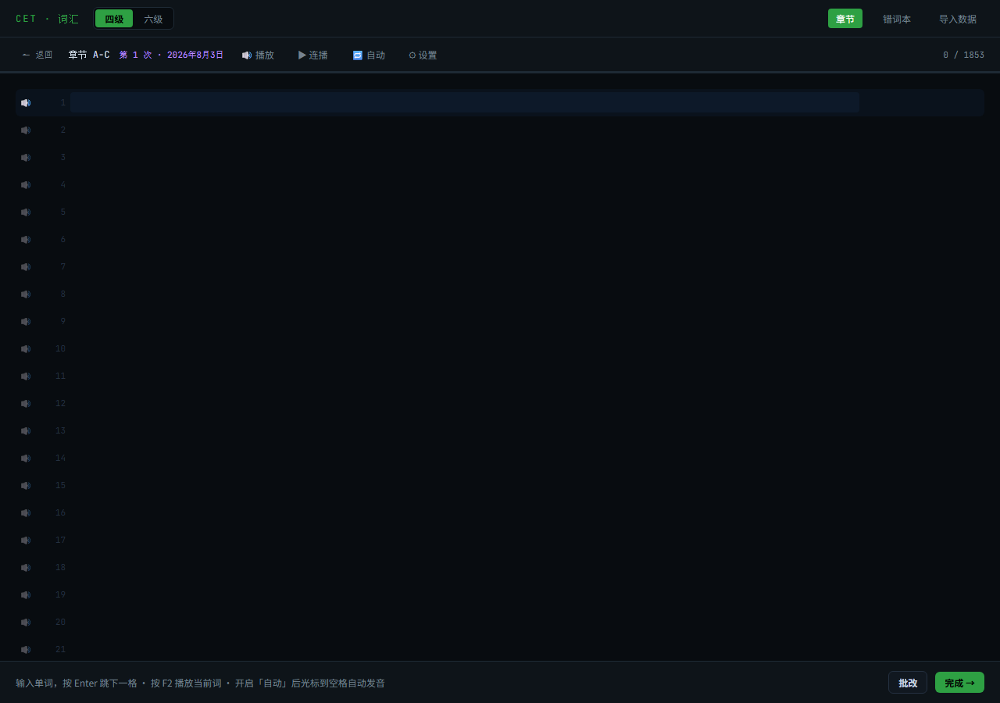

四六级词汇 · 听写练习
为大学英语四六级听力备考设计的单词听写工具：内置英音/美音发音、随机百词测试与乱序测试。
CET4 7508 词 · CET6 5651 词 · 基于四六级大纲词汇


Features · 功能
📚
双词库切换
四级（7508 词）与六级（5651 词）应用内一键切换，历史记录和错词本各自独立。
🎧
内置发音
英音/美音可切换；浏览器无本地语音时自动切换在线词典发音，支持真人发音模式。
🎲
随机百词测试
从当前词库全量随机抽取 100 词乱序听写，成绩计入历史，可反复再测。
🔀
章节乱序测试
每个章节一键打乱顺序听写，防止背顺序，结果标注「乱序」。
📒
错词本
自动收录所有错词，按章节分组，支持单章节或全部错词重练。
📈
历史统计
正确率折线图展示进步趋势，可回看每次听写的错词与全部作答。
How to Use · 使用方法
01
选择词库
顶部切换「四级」或「六级」，进入任意章节，例如 A-C、S-U。
02
开始练习
选「开始听写」「乱序测试」，或首页直接「随机百词」；配合发音边听边打，Enter 跳下一格。
03
批改复习
自动判分，错词进错词本，回看历史趋势并针对性重练。
现在就开始背词 ✨
打开听写工具